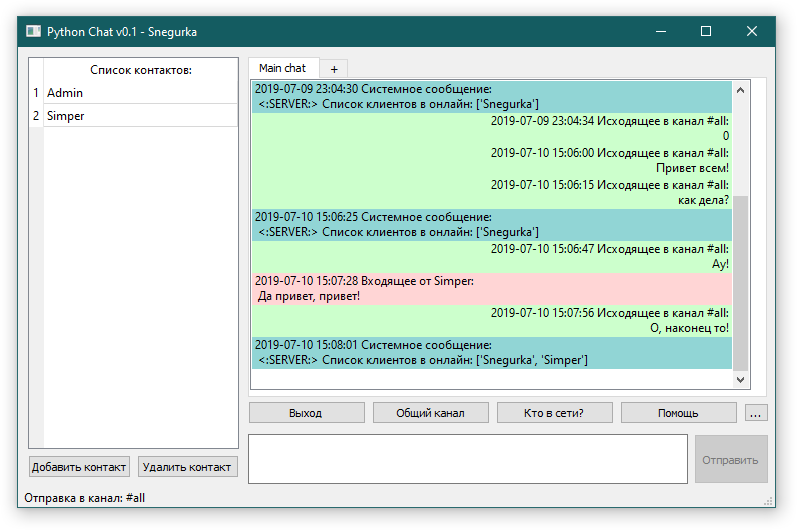

Client module¶
Клиентское приложение для обмена сообщениями. Поддерживает отправку сообщений пользователям которые находятся в сети.
Поддерживает аргументы коммандной строки:
python client.py {имя сервера} {порт} {имя пользователя} {пароль}
{имя сервера} - адрес сервера сообщений.
{порт} - порт по которому принимаются подключения
{имя пользователя} - имя пользователя с которым произойдёт вход в систему.
{пароль} - пароль пользователя.
Все опции командной строки являются необязательными, но имя пользователя и пароль необходимо использовать в паре.
Примеры использования:
python client.py
Запуск приложения с параметрами по умолчанию.
python client.py 127.0.0.1 7777
Запуск приложения с указанием подключаться к серверу по адресу 127.0.0.1:7777
python 127.0.0.1 7777 Simper 123
Запуск приложения с пользователем Simper и паролем 123 и указанием подключаться к серверу по адресу 127.0.0.1:7777
client.py¶
Запускаемый модуль,содержит парсер аргументов командной строки и функционал клиентского приложения.
-
class
client.Client(serv_addr='0.0.0.0', serv_port=7777, mode='f', acc='Guest', passw='')¶ Основной класс клиента чата, функции приема/отправки сообщений, изменения списка контактов и т.п.
-
add_msg_to_hist(msg_from, msg_to, msg, direction)¶ Процедура добавления сообщения в историю пользователя в локальную БД
-
chk_msg_before_send(account, msg)¶ Функция предобработки сообщений перед отправкой на сервер. Вызывает внутренние команды, если сообщение содержит ключевые слова
-
client_exit()¶ Процедура завершения приложения с отправкой команды о выходе на сервер
-
create_admin_message(text, account_name)¶ Функция отправки спец сообщения для пользователя Admin
-
create_socket()¶ Создание сокета для общения с сервером
-
get_contact_list(show_progress='Y')¶ Функция запроса списка контактов с сервера
-
run()¶ Процедура чтения сообщений с сервера
-
send_message(message_to, text)¶ Функция отправки сообщения на сервер
-
server_auth(secret_key)¶ Аутентификация клиента на удаленном сервисе. secret_key - ключ шифрования, известный клиенту и серверу
-
set_contact_list(command, user)¶ Функция добавления/удаления элемента списка контактов с вызовом синхронизации списка с сервером
-
start_client()¶ Процедура запуска транспорта для сообщений
-
who_online()¶ Функция отправки команды «Кто в сети?» на сервер
-
-
class
client.m_window¶ Класс главного окна приложения
-
add_ok()¶ Обработка нажатия кнопки «Ок» при добавлении контакта Отправка запроса на сервер и обновление списка контактов
-
add_to_cl()¶ Обработка нажатия кнопки «Добавить контакт» главного окна Вызывает окно для ввода имени контакта
-
connection_lost()¶ Выдача сообщения о ошибке связи и завершение работы приложения
-
create_user_list()¶ Формирование списка контактов из локальной БД
-
del_from_cl()¶ Обработка нажатия кнопки «Удалить контакт» главного окна Вызывает окно для ввода имени контакта
-
del_ok()¶ Обработка нажатия кнопки «Ок» при удалении контакта Отправка запроса на сервер и обновление списка контактов
-
event(e)¶ Обработка нажатий на Esc и Enter в основном окне
-
history_list_update(str='')¶ Процедура обновления главного окна с сообщениями. Разные цвета для входящих, исходящих и сообщений от сервера
-
initUI()¶ Инициализация интерфейса главного окна
-
mess_to_userchat(text)¶ Вывод произвольного сообщения пользователю в окно чата
-
on_send()¶ Обработчик нажатия кнопки «Отправить» Забираем текст, очищаем поле ввода, делаем кнопку неактивной, отправляем сообщение на сервер
-
safe_exit()¶ Закрытие GUI с остановкой потока доставщика
-
select_active_user()¶ Функция обработчик даблклика по контакту. Меняет канал отправки
-
set_active_chat()¶ Вывод произвольного сообщения пользователю в окно чата
-
set_active_send()¶ При изменении текста в окне ввода делаем кнопку «Отправить» активной
-
start_client()¶ Запуск обработчика сообщений
-
to_all()¶ Переключение отправки на общий канал
-
-
class
client.c_window¶ Окно подключения, логин/пароль. Вызывается из класса главного окна
-
connectPressed()¶ Обработка нажатия кнопки Подключить в окне подключения. Сохраняет последний введеный логин/пароль в БД, вызывает подключение и обновление списка пользователей главного окна из локального списка пользователей
-
event(e)¶ Обработка Enter и Esc в окне подключения
-
initUI()¶ Инициализация интерфейса окна подключения
-
client_database.py¶
-
class
client_database.Chat_histories(user_login, msg_from, msg_to, msg, direction, date=datetime.datetime(2019, 7, 10, 15, 10, 39, 213545))¶ Класс описывающий таблицу истории чата. Содержит владельца истории, адресата, получателя, сообщение, направление и дату.
-
class
client_database.User_contact_list(owner_login, in_list_login, group='General')¶ Класс описывающий таблицу списка контактов пользователя в клиенте. Содержит владельца списка, контакт и группу.
-
class
client_database.Last_user(login, pwd, save_pwd, server_addr, server_port)¶ Класс описывающий таблицу последнего логинившегося пользователя. Содержит логин, пароль, реквизиты сервера, атрибут подставления пароля при подключении.